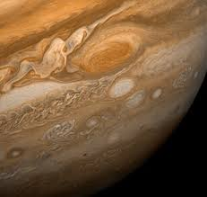

Júpiter, o maior planeta do nosso Sistema Solar, é uma imponente esfera gasosa que intriga e fascina astrônomos e entusiastas do espaço há séculos. Com sua massa colossal e aparência majestosa, Júpiter desempenha um papel fundamental na dinâmica do nosso sistema planetário. Neste artigo, mergulharemos nas características e curiosidades desse gigante gasoso.
Júpiter é um planeta gasoso, constituído principalmente de hidrogênio e hélio, com traços de outras substâncias, como metano e amônia. Essa composição o torna distinto dos planetas rochosos, como a Terra. Com um diâmetro de aproximadamente 142.984 km, Júpiter é mais de 11 vezes maior que a Terra e possui uma massa aproximadamente 318 vezes maior que a do nosso planeta.

Uma das características mais marcantes de Júpiter é a Grande Mancha Vermelha uma gigantesca tempestade que ocorre há séculos. A Grande Mancha Vermelha é um fenômeno persistente e tem sido observada desde o Século XVII. Essa tempestade é tão grande que poderia engolir três Terras. Apesar de sua longevidade, a causa exata de sua formação ainda pe objeto de estudo e pesquisa.
Júpiter também possuiu um sistema de anéis, embora menos proeminente do que os anéis de Sturno. Esses anéis são compostos principalmente de partículas de poeira e pequenos fragmentos rochosos e sua estrutura pode ser um resultado da colisão de cometas e asteroides com as kuas de Júpiter
Além dos anéis, Júpiter é cercado por um vasto conjunto de luas. Atualmente, mais de 80 luas foram identificadas ao redor do planeta gigante. Quatro das luas de Júpiter, conhecidas como "luas galilenas" (Jo, Europa, Ganimedese e Calisto) , foram descobertas por Galileu Galilei en 1610. Essas luas são de grande interesse cintífico, pois podermma abrigar oceanos subterrâneose potencialmente condiçoes propícias para a existência de vida
Jupiter tem sido objeto de estudo e exploração pelas agências espaciais há várias decadas. A sonda espacial Voyager 1 fez uma passagem próxima a Júpiter em 1979, fornecendo as orimeiras imagens detalhadas do planeta e suas luas. Mais tarde, as missões Galileo, Juno e outras trouxeram dados cruciais sobre a estrutura interna de Júpiter sem campo magnéticoe suas tempestades.
Júpiter é verdadeiramente um colosso celestial que continua a intrigar os cientistas e entusiastas espaço. Sua massa, tamanho e complexidade atmosférica o tornam natural para entender a formação e a evolução de planetas gasosos. Além disso suas luas e tempestades proporcionam uma visão fascinante da dinâmica planetária e d do potencial de mundos alienígenas. À medida que a exploração espacial continua avançando, é provável que Júpiter ainda reserve muitas surpresas e segredos a serem revelados.